8-Foot Nose on Physics Building
A group of friends and I built an 8 foot nose and hung it on the side of our campus physics building.
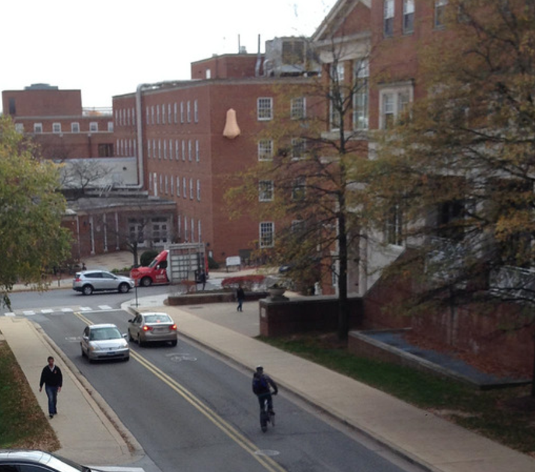When we first started, we knew we wanted to build something wacky (and bring something unusual to campus routine) but we weren’t quite sure what. We threw around ideas like creating a large sea serpent sculpture that weaved in and out of a building through windows, or creating a giant secret tea party in an obscure location on campus. I’m not exactly sure how or why, but one of us said “a giant nose!” and we all immediately came to agreement.
And so it began: the making of our 8-foot tall nose.
To start, Josh Sheldon modified a 3D CAD model from Thingiverse. We used that for dimensions, and to figure out which and the amount of materials we’d need.
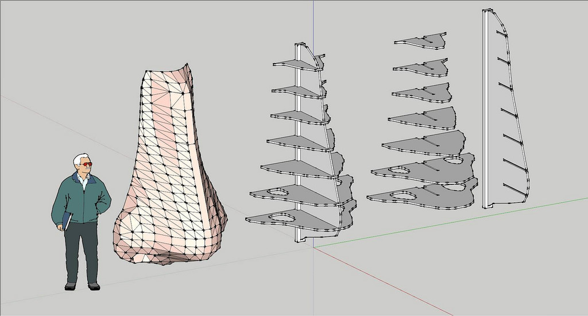We bought:
- 1 roll of chicken wire
- 3 4x8 sheets of plywood
- 2 cans of paint
- 4 large paintbrushes
- 1 jar of wallpaper paste
- 1 bucket
- 14 metal clasps
- 1 roll of brown paper
- 1 steel rope
Once we had all of the materials, we projected the CAD model onto the plywood and traced out each piece.
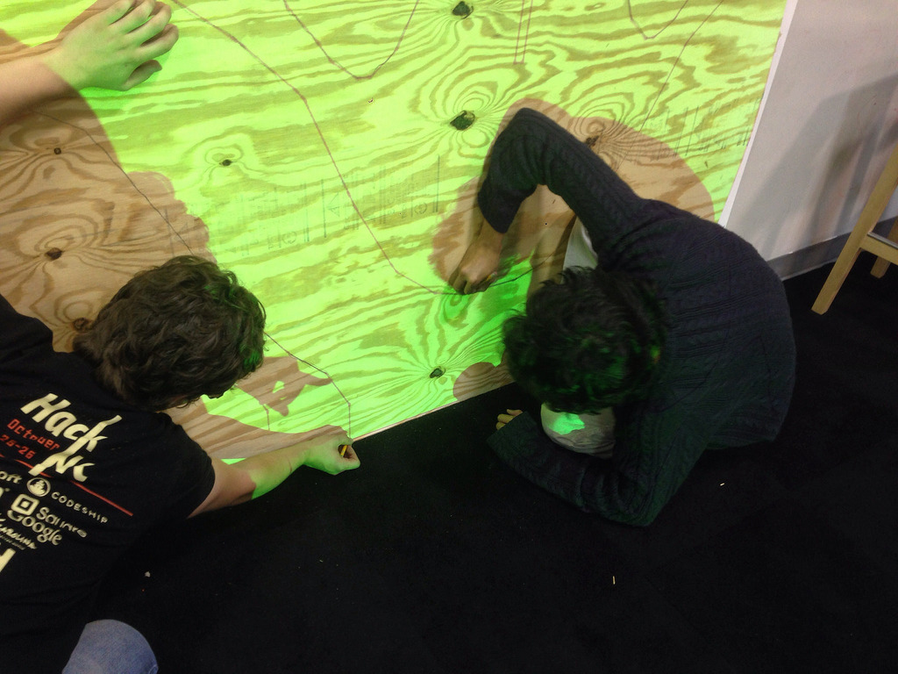Then, we cut out each piece, put them together, and put together the base structure.
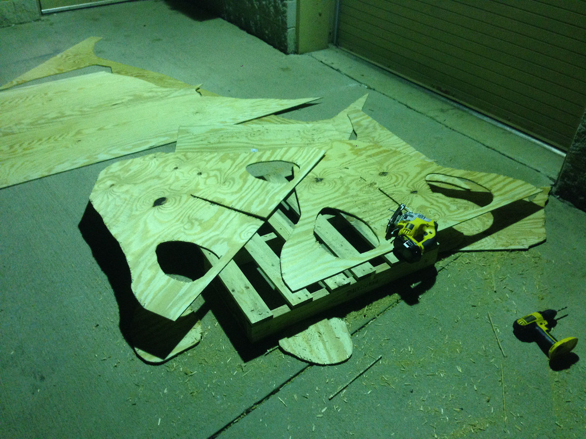Next, we took little metal squares and clasped them together to make the structure more rigid and to make sure the pieces wouldn’t slide.
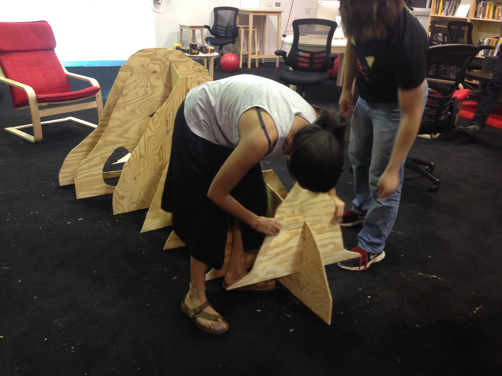We then needed to give the nose a form. We wrapped chicken wire around the wooden structure - now we really had a base! This looked super strange to people who didn’t know about our project. We had a several confused looks, and most people guessed it was a canoe ;).
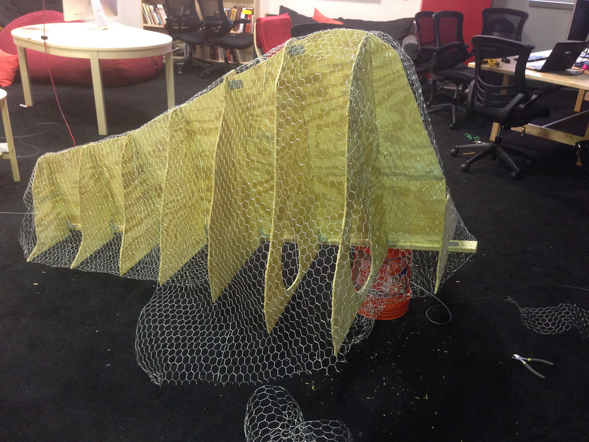The chicken wire step was challenging because a) it was spikey, b) the nose narrowed at the top, c) we needed it to be close to perfect, otherwise it wouldn’t look like a nose, and d) we had to flip the (somewhat delicate) nose over several times to make sure it was entirely wrapped.
And then, the part I’d been waiting for: paper mache + paint!
Paper Mache
We took thin sheets of brown paper, dipped them in wallpaper paste mixed with water, and placed them over the chicken wire. The paper didn’t stick to the chicken wire as well as we’d expected so it took a little time and a few layers until we were satisfied. At some point later on while it was outside, it tore a bit because of the rain near the nostril area (haachoo!) but it was fairly easy to piece back together.
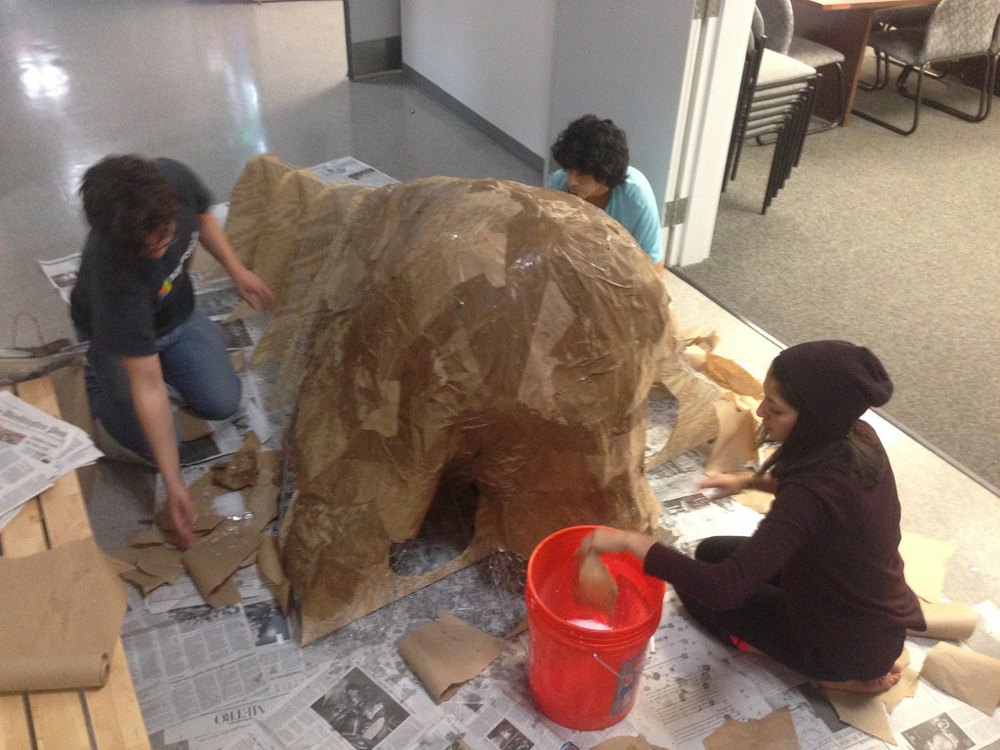 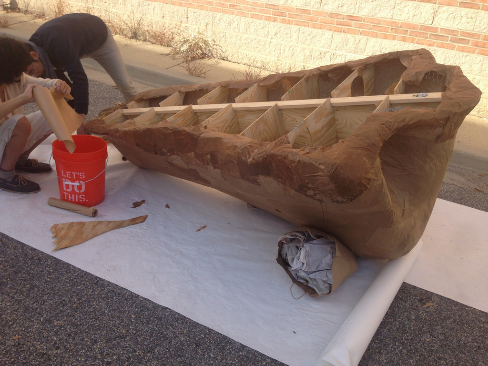Paint
We painted several layers on the nose (until we couldn’t see any brown from the paper underneath). The paint helped strengthen the form.
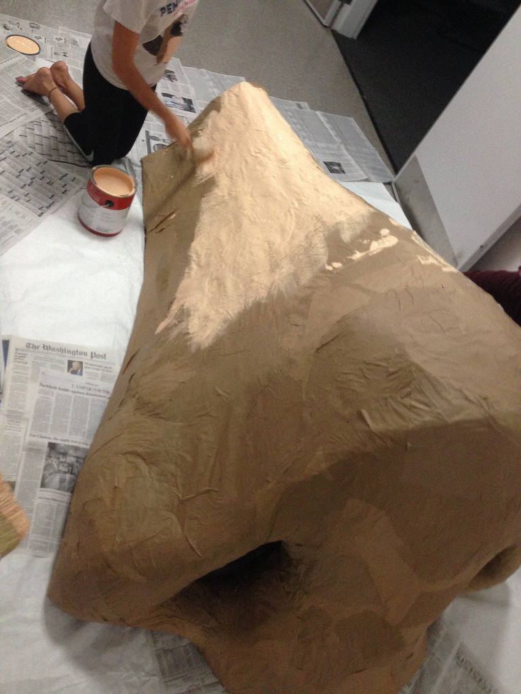Alas, the nose was complete!
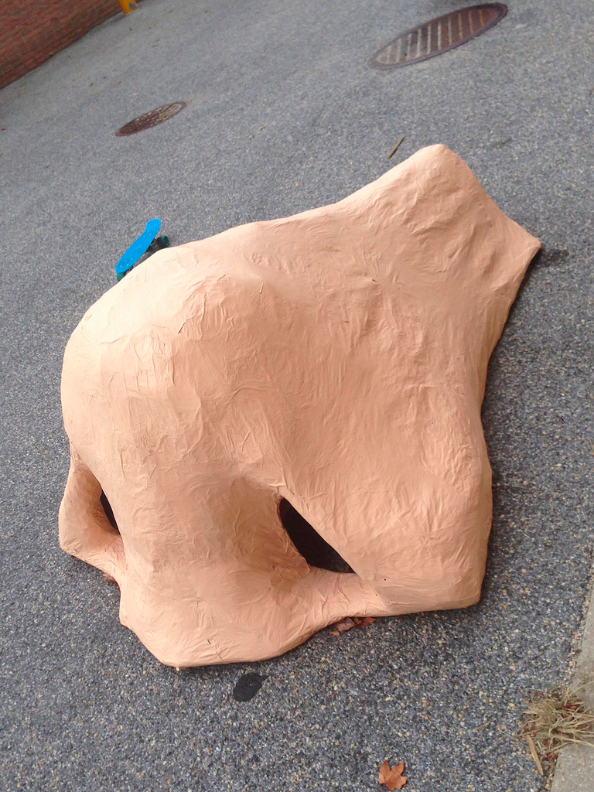And now, for the secret sneaky spy stuff.
Hanging the nose
We chose the physics building because it was by a popular pathway that a lot of students frequent (=high visibility).
We explored options like bringing in the nose from inside, walking to the roof, and hanging it that way, but the doorways and staircases weren’t wide enough.
There were five of us: 2 stayed on the ground, 3 went up to the roof. This way we’d have more manpower up top while pulling the nose up, but also enough on the ground to jumpstart the lift.
Josh goes into more depth on the deployment on his version of the nose story, but essentially we used the wrong rope at first and created a tear in the brick from the friction, so we switched to a different rope, took a cut up piece of plastic from a milk jug, placed it between the brick and the rope, and the nose glided right up.
Then, we tied the rope (that held the nose) to the roof, and.... TA DA!
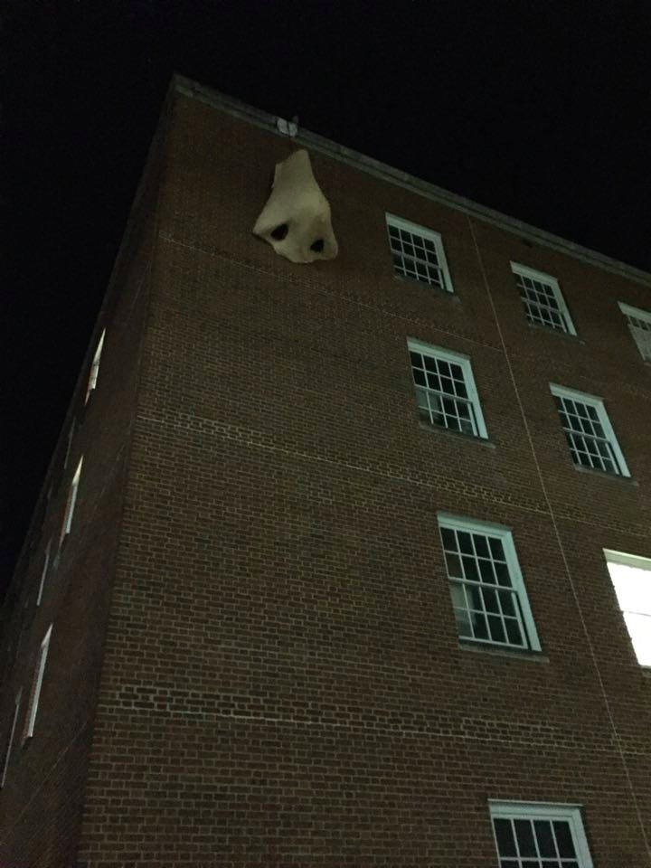 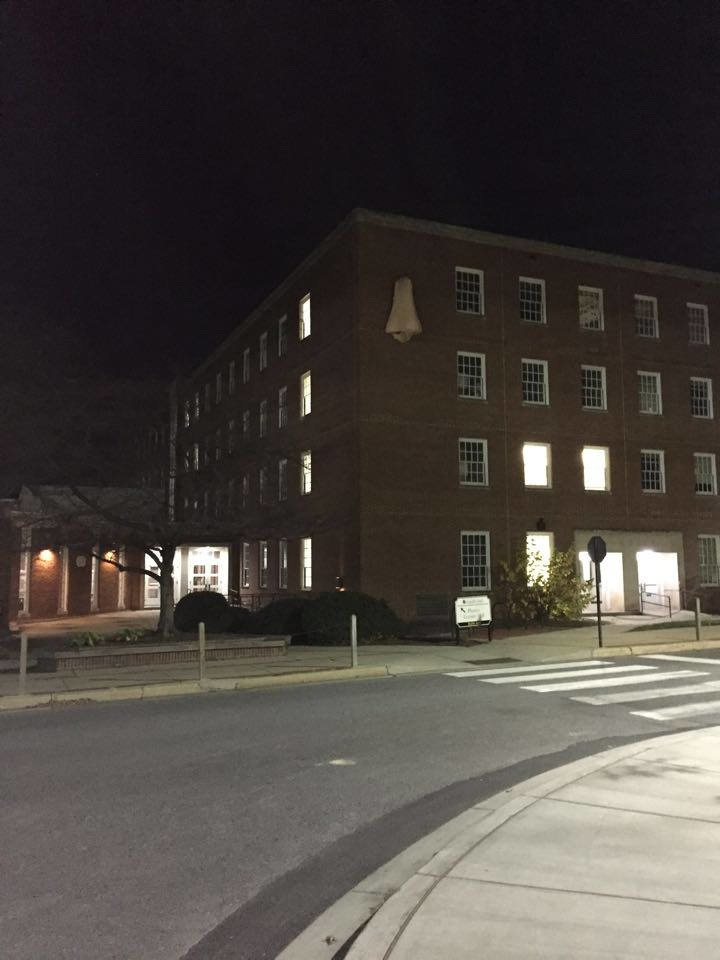It stayed up there for about 7.5 hours before campus security took it down the next day.
Mission accomplished.
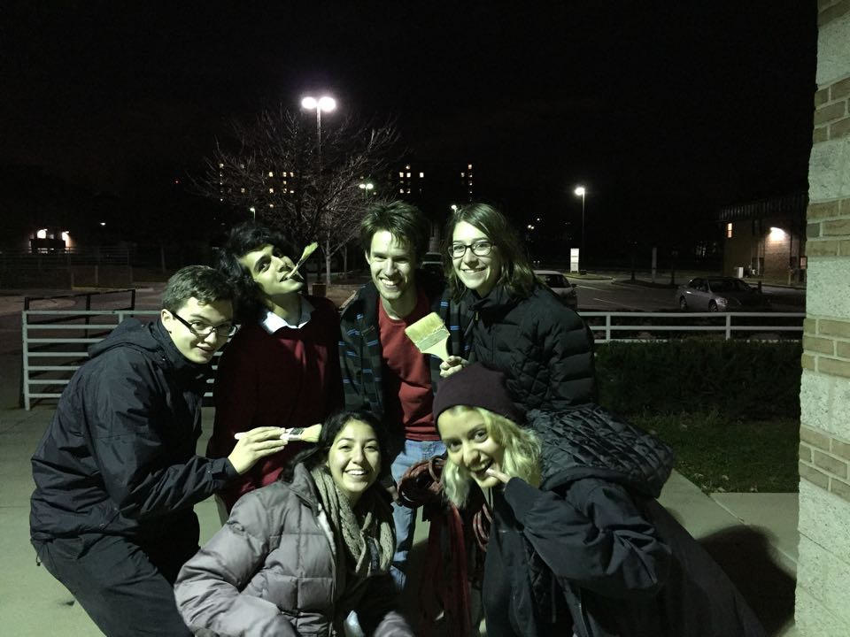